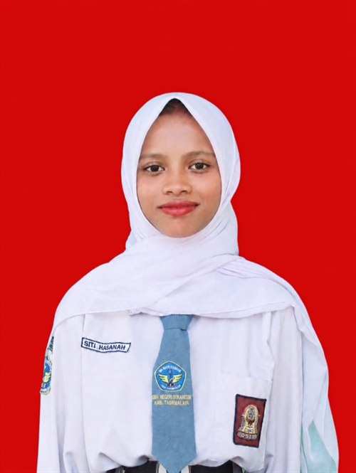

Biodata Diri
Siti Hasanah
Mahasiswa / Profesional Teknik Komputer & Jaringan — Spesialisasi Konfigurasi MikroTik
- Lahir, 03 Maret 2008
- Email: sitihasanahhhh441@gmail.com
- Telp / WA: 0831-5033-1284
Tentang Saya
Saya Siti Hasanah, lahir pada 03 Maret 2008. Saya memiliki minat dan kemampuan di bidang konfigurasi MikroTik, mulai dari pengaturan dasar jaringan, pengelolaan router, hingga monitoring dan perawatan jaringan.
Saya adalah pribadi yang teliti, bertanggung jawab, dan senang belajar hal baru. Di luar kegiatan teknis, saya menikmati waktu untuk memasak dan menonton sebagai cara menyeimbangkan fokus dan kebugaran pikiran. Saya siap berkontribusi dan terus berkembang dalam lingkungan kerja yang profesional.
Biodata Umum
| Nama Lengkap | Siti Hasanah |
|---|---|
| Tanggal Lahir | 03 Maret 2008 |
| Usia | 18 tahun |
| sitihasanahhhh441@gmail.com | |
| No. Telp / WA | 0831-5033-1284 |
| Pendidikan | SMKN Sukaresik |
| Bidang Keahlian | Konfigurasi MikroTik |
| Hobi | Memasak, Menonton |
Pendidikan
Sekolah Menengah Kejuruan
SMKN Sukaresik
Menempuh pendidikan kejuruan dengan fokus pada bidang teknologi, meliputi praktik konfigurasi jaringan MikroTik, dasar jaringan komputer, serta instalasi dan perawatan perangkat jaringan.
Keahlian
Konfigurasi MikroTik
Pengaturan router dan switch MikroTik: DHCP, NAT, firewall, share bandwidth, wireless, serta monitoring jaringan.
Instalasi & Perawatan Jaringan
Pemasangan kabel LAN, konfigurasi access point, crimping, serta troubleshooting gangguan jaringan.
Dasar Jaringan Komputer
Pemahaman IP address, subnetting, topologi jaringan, dan instalasi kabel serta perangkat jaringan.
Microsoft Office & Pengetikan
Ms. Word, Excel, dan PowerPoint untuk kebutuhan administrasi dan pelaporan.
Hobi
Memasak
Menyusun resep dan mengolah makanan sebagai kegiatan kreatif yang melatih ketelitian dan kesabaran.
Menonton
Menonton film dan konten edukatif sebagai sarana hiburan sekaligus menambah wawasan.
Kontak
Terhubung dengan saya melalui:
💬 Chat via WhatsApp